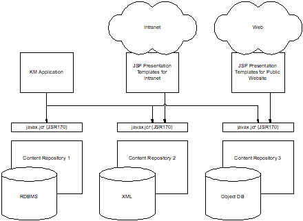
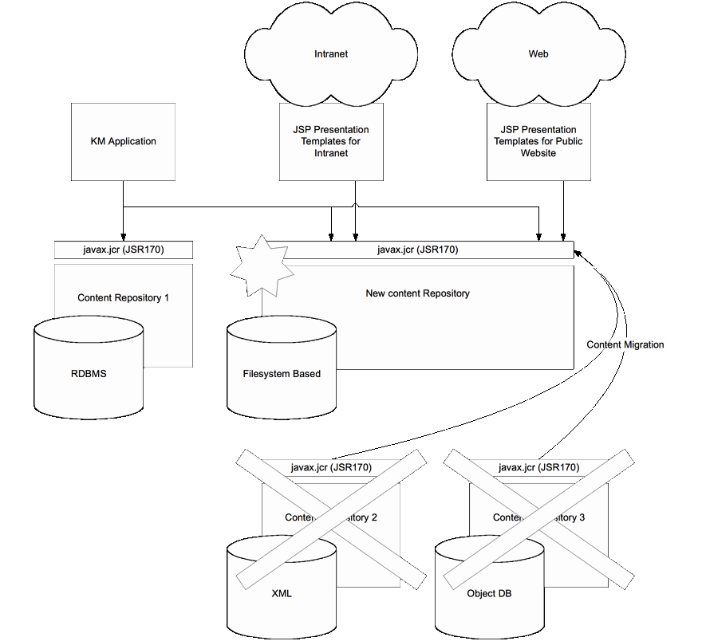

ENT Corporation, a large distributed enterprise, has different content management systems in different divisions. Their Knowledge Management (KM) team has developed an idea for better discovery of corporate assets across the various repositories.
The team implements the application using the Content Repository for Java Technology API to the content management (CM) systems. As the KM team finds more CM systems across the enterprise, the application can easily harvest the new data as well as that from the existing systems.
Additionally, the presentation templates that cover the corporate design guidelines for the organization have been developed based on this specification in a Java framework around JSP.

A year later, two divisions switch their CM vendors. As part of the migration process, the KM discovery application is tested against the new CMS in those divisions. Other than having its configuration file updated, the application works as before.
Through their standardized interface these repositories allow simple migration of the content from the two old repositories to the new one; this means that the content can be converted from the source repository to the newly purchased destination repository through a simple export and import.

Furthermore, all the content presentation templates developed against this specification keep working as before. In the case of ENT the development of this presentation logic was one of the major investments made when the intranet and the public Internet website were first developed. Being able to migrate this logic painlessly to work on top of the new repository is therefore of great benefit.